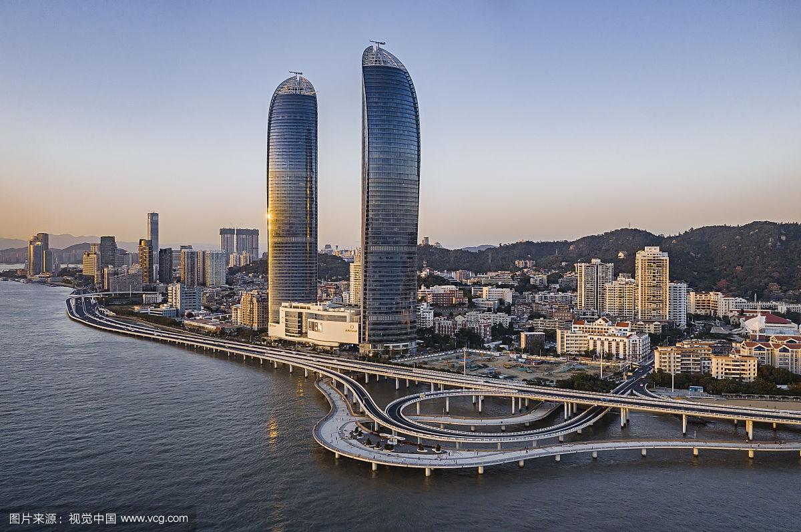

Tourist Attractions of Xiamen
1. Gulangyu Island: Known as the "Island of Piano," Gulangyu Island is a car-free island with
well-preserved old buildings from the colonial era. Visitors can take a ferry to the island and
stroll around its narrow streets to admire the architecture, visit the museums and galleries,
and listen to street musicians.
2. Nanputuo Temple: One of the most famous Buddhist temples in southern China, Nanputuo Temple
is located at the foot of Wulao Peak in Xiamen. It was founded during the Tang Dynasty and has a
history of over 1,000 years. The temple is a popular destination for pilgrims and tourists who
come to see the impressive architecture and beautiful gardens.
3. Hulishan Fortress: Built in 1891 to defend Xiamen against foreign invaders, Hulishan Fortress
is a well-preserved coastal defense system. It is located on the southern coast of Xiamen Island
and consists of a barracks, ammunition depot, and cannon emplacements. Visitors can climb up to
the top of the fortress and enjoy the panoramic view of the sea.
4. Xiamen University: Founded in 1921, Xiamen University is one of the most beautiful
universities in China. Its main campus is located on Xiamen Island and is renowned for its
beautiful gardens, traditional architecture, and serene environment. Visitors can stroll around
the campus, visit the museums, and attend cultural events.